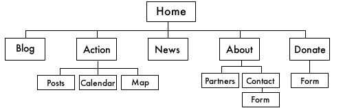
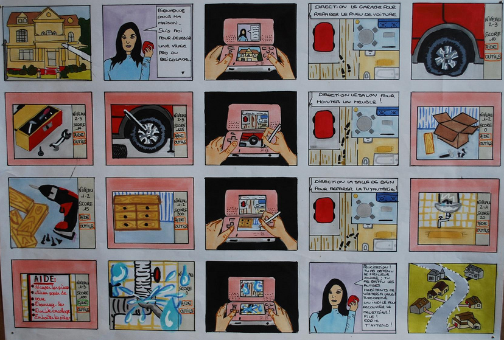

This image shows the most basic schematic for websites. It is simply
showing the hierarchy of pages. In the sidebar are a couple of other types of schematics from various real world projects. Notice how they are different, notice how they are the same.
Each drawing represents the creators thought process in how her project should be structured to meet her vision. These are very basic drawings, but they can become as complex as you need them to be. Schematics can be incredibly helpful when figuring out your ideas and when explaining an overarching concept to people.
A Storyboard shows each scene of a story in sequential order. They can be detailed down to the nanosecond or they can serve as a rough outline for how the story is going to visually unfold. Laying out the story this way will help you keep focus. You can also add a layer on top to indicate user interactions or additional information you’d like to bring into the story.
Animatics are Storyboards laid out on a timeline. Chris Milk created a very cool Animatic for the Wilderness Downtown, and we recommend checking it out.
Storyboards, like everything we do to plan and prepare a project, usually go through a series of iterations. Your initial Storyboard might very well be a scribble on a scrap of paper (what we refer to as a “napkin sketch”).
Both Schematics and Storyboards can be as complicated as you need them to be. Remember, there’s no right way to do it, no single solution, but creating schematics and storyboards will help you focus on and iterate your Story, Vision and Tech.